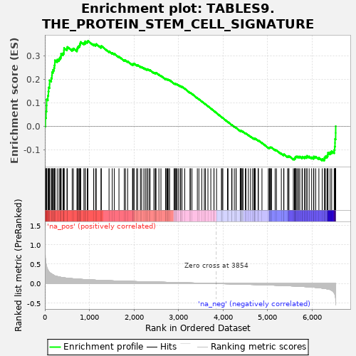

| | | Dataset | al10_v_al2 |
| Phenotype | NoPhenotypeAvailable |
| Upregulated in class | na_pos |
| GeneSet | TABLES9.THE_PROTEIN_STEM_CELL_SIGNATURE |
| Enrichment Score (ES) | 0.36374736 |
| Normalized Enrichment Score (NES) | 1.3170491 |
| Nominal p-value | 0.04037267 |
| FDR q-value | 0.09945017 |
| FWER p-Value | 0.793 |
Table: GSEA Results Summary

Fig 1: Enrichment plot: TABLES9.THE_PROTEIN_STEM_CELL_SIGNATURE
Profile of the Running ES Score & Positions of GeneSet Members on the Rank Ordered List
| PROBE | GENE SYMBOL | GENE_TITLE | RANK IN GENE LIST | RANK METRIC SCORE | RUNNING ES | CORE ENRICHMENT | | 1 | Esco2 | | | 13 | 0.651 | 0.0356 | Yes |
| 2 | Stmn1 | | | 26 | 0.518 | 0.0637 | Yes |
| 3 | Incenp | | | 38 | 0.457 | 0.0885 | Yes |
| 4 | Nusap1 | | | 40 | 0.449 | 0.1143 | Yes |
| 5 | Ccnb1 | | | 68 | 0.345 | 0.1300 | Yes |
| 6 | Hells | | | 79 | 0.333 | 0.1478 | Yes |
| 7 | Brd8 | | | 86 | 0.318 | 0.1652 | Yes |
| 8 | Uhrf1 | | | 106 | 0.288 | 0.1789 | Yes |
| 9 | Ckap2 | | | 107 | 0.287 | 0.1955 | Yes |
| 10 | Pmf1 | | | 144 | 0.257 | 0.2048 | Yes |
| 11 | Ttk | | | 159 | 0.242 | 0.2166 | Yes |
| 12 | Tia1 | | | 162 | 0.240 | 0.2301 | Yes |
| 13 | Dtl | | | 183 | 0.225 | 0.2400 | Yes |
| 14 | Nup210 | | | 207 | 0.210 | 0.2486 | Yes |
| 15 | Pou2f1 | | | 215 | 0.208 | 0.2595 | Yes |
| 16 | Bcl11a | | | 224 | 0.199 | 0.2697 | Yes |
| 17 | Tcof1 | | | 226 | 0.197 | 0.2810 | Yes |
| 18 | Pck2 | | | 277 | 0.183 | 0.2837 | Yes |
| 19 | Cdca5 | | | 319 | 0.172 | 0.2872 | Yes |
| 20 | Rad50 | | | 342 | 0.165 | 0.2933 | Yes |
| 21 | Mcm5 | | | 362 | 0.161 | 0.2996 | Yes |
| 22 | Psip1 | | | 365 | 0.160 | 0.3086 | Yes |
| 23 | Trim28 | | | 408 | 0.152 | 0.3107 | Yes |
| 24 | Chek2 | | | 428 | 0.148 | 0.3164 | Yes |
| 25 | Picalm | | | 429 | 0.148 | 0.3249 | Yes |
| 26 | Pola2 | | | 432 | 0.147 | 0.3332 | Yes |
| 27 | Phgdh | | | 497 | 0.139 | 0.3312 | Yes |
| 28 | Phip | | | 506 | 0.138 | 0.3379 | Yes |
| 29 | Mcm7 | | | 614 | 0.126 | 0.3284 | Yes |
| 30 | Uhrf2 | | | 641 | 0.124 | 0.3314 | Yes |
| 31 | Kif20a | | | 722 | 0.117 | 0.3256 | Yes |
| 32 | Clic4 | | | 727 | 0.117 | 0.3317 | Yes |
| 33 | Wee1 | | | 737 | 0.116 | 0.3371 | Yes |
| 34 | Nfic | | | 755 | 0.114 | 0.3410 | Yes |
| 35 | Cbx3 | | | 780 | 0.111 | 0.3437 | Yes |
| 36 | Hmgb3 | | | 788 | 0.111 | 0.3490 | Yes |
| 37 | Atrx | | | 796 | 0.110 | 0.3543 | Yes |
| 38 | Nrm | | | 806 | 0.110 | 0.3592 | Yes |
| 39 | Dnajc9 | | | 877 | 0.104 | 0.3542 | Yes |
| 40 | Ilf3 | | | 905 | 0.102 | 0.3559 | Yes |
| 41 | Arsb | | | 906 | 0.102 | 0.3618 | Yes |
| 42 | Tbc1d4 | | | 952 | 0.099 | 0.3604 | Yes |
| 43 | Chek1 | | | 968 | 0.098 | 0.3637 | Yes |
| 44 | Nsmce2 | | | 1096 | 0.091 | 0.3490 | No |
| 45 | Bclaf1 | | | 1138 | 0.088 | 0.3477 | No |
| 46 | Xrcc6 | | | 1155 | 0.087 | 0.3502 | No |
| 47 | Rrp1b | | | 1261 | 0.083 | 0.3385 | No |
| 48 | Sipa1l1 | | | 1269 | 0.082 | 0.3421 | No |
| 49 | Rpa2 | | | 1442 | 0.074 | 0.3194 | No |
| 50 | Dach1 | | | 1514 | 0.071 | 0.3123 | No |
| 51 | Senp1 | | | 1561 | 0.069 | 0.3090 | No |
| 52 | Aqp4 | | | 1665 | 0.065 | 0.2966 | No |
| 53 | Adprhl2 | | | 1784 | 0.061 | 0.2815 | No |
| 54 | Macrod1 | | | 1812 | 0.060 | 0.2808 | No |
| 55 | Sfxn2 | | | 1861 | 0.058 | 0.2766 | No |
| 56 | Chchd6 | | | 1970 | 0.054 | 0.2627 | No |
| 57 | Nrf1 | | | 1975 | 0.054 | 0.2652 | No |
| 58 | Slc25a4 | | | 2000 | 0.053 | 0.2646 | No |
| 59 | Bcl7a | | | 2004 | 0.053 | 0.2672 | No |
| 60 | Mcm3 | | | 2061 | 0.051 | 0.2613 | No |
| 61 | Utp15 | | | 2085 | 0.051 | 0.2607 | No |
| 62 | Fiz1 | | | 2147 | 0.049 | 0.2539 | No |
| 63 | Nmral1 | | | 2174 | 0.048 | 0.2526 | No |
| 64 | Mcm4 | | | 2224 | 0.047 | 0.2476 | No |
| 65 | Mcm2 | | | 2259 | 0.046 | 0.2449 | No |
| 66 | Nfib | | | 2294 | 0.045 | 0.2421 | No |
| 67 | Dapk2 | | | 2302 | 0.045 | 0.2436 | No |
| 68 | Parp1 | | | 2340 | 0.044 | 0.2403 | No |
| 69 | Nfia | | | 2365 | 0.043 | 0.2390 | No |
| 70 | Rbm38 | | | 2449 | 0.041 | 0.2283 | No |
| 71 | Arl6ip6 | | | 2480 | 0.040 | 0.2259 | No |
| 72 | Surf2 | | | 2486 | 0.040 | 0.2274 | No |
| 73 | Fam60a | | | 2498 | 0.039 | 0.2279 | No |
| 74 | Gusb | | | 2562 | 0.037 | 0.2202 | No |
| 75 | Vgll4 | | | 2608 | 0.036 | 0.2152 | No |
| 76 | Gins4 | | | 2711 | 0.033 | 0.2010 | No |
| 77 | Sntb2 | | | 2719 | 0.033 | 0.2018 | No |
| 78 | Hmbox1 | | | 2744 | 0.032 | 0.1999 | No |
| 79 | Isg20l2 | | | 2759 | 0.032 | 0.1995 | No |
| 80 | Kcnq1 | | | 2781 | 0.031 | 0.1980 | No |
| 81 | Casp2 | | | 2803 | 0.030 | 0.1965 | No |
| 82 | Foxp4 | | | 2903 | 0.027 | 0.1825 | No |
| 83 | Noxa1 | | | 2926 | 0.027 | 0.1806 | No |
| 84 | Irf2bp1 | | | 2929 | 0.027 | 0.1818 | No |
| 85 | Dock11 | | | 2952 | 0.026 | 0.1798 | No |
| 86 | Slc27a1 | | | 2973 | 0.025 | 0.1782 | No |
| 87 | Mga | | | 3004 | 0.024 | 0.1748 | No |
| 88 | Cnn3 | | | 3043 | 0.023 | 0.1702 | No |
| 89 | Lzts2 | | | 3047 | 0.023 | 0.1711 | No |
| 90 | Glrx | | | 3077 | 0.022 | 0.1678 | No |
| 91 | Stk39 | | | 3081 | 0.022 | 0.1686 | No |
| 92 | Ncor2 | | | 3143 | 0.021 | 0.1602 | No |
| 93 | Ivd | | | 3261 | 0.017 | 0.1428 | No |
| 94 | Cdk4 | | | 3274 | 0.017 | 0.1418 | No |
| 95 | Fto | | | 3306 | 0.016 | 0.1379 | No |
| 96 | Smad5 | | | 3426 | 0.012 | 0.1198 | No |
| 97 | Rtn4 | | | 3461 | 0.011 | 0.1151 | No |
| 98 | Wiz | | | 3526 | 0.009 | 0.1056 | No |
| 99 | Zmym4 | | | 3583 | 0.008 | 0.0973 | No |
| 100 | Mcm6 | | | 3609 | 0.007 | 0.0938 | No |
| 101 | Wdr55 | | | 3664 | 0.006 | 0.0856 | No |
| 102 | Hmgn1 | | | 3729 | 0.004 | 0.0758 | No |
| 103 | Lmnb2 | | | 3799 | 0.002 | 0.0650 | No |
| 104 | Hddc2 | | | 3801 | 0.002 | 0.0649 | No |
| 105 | Mycbp2 | | | 3858 | -0.000 | 0.0561 | No |
| 106 | Sorbs2 | | | 3967 | -0.003 | 0.0393 | No |
| 107 | Dtd1 | | | 3982 | -0.003 | 0.0373 | No |
| 108 | Fhl2 | | | 3999 | -0.004 | 0.0350 | No |
| 109 | Mbp | | | 4103 | -0.007 | 0.0192 | No |
| 110 | Limk2 | | | 4116 | -0.007 | 0.0177 | No |
| 111 | Tcf12 | | | 4197 | -0.010 | 0.0057 | No |
| 112 | Insr | | | 4205 | -0.010 | 0.0052 | No |
| 113 | Tcf3 | | | 4257 | -0.012 | -0.0021 | No |
| 114 | Csnk1e | | | 4295 | -0.013 | -0.0072 | No |
| 115 | Apex1 | | | 4298 | -0.013 | -0.0068 | No |
| 116 | Pdxk | | | 4389 | -0.016 | -0.0200 | No |
| 117 | Acss2 | | | 4398 | -0.016 | -0.0204 | No |
| 118 | Epc1 | | | 4403 | -0.016 | -0.0200 | No |
| 119 | Gtf2i | | | 4411 | -0.017 | -0.0202 | No |
| 120 | Zfpm1 | | | 4416 | -0.017 | -0.0198 | No |
| 121 | Tns3 | | | 4445 | -0.018 | -0.0232 | No |
| 122 | Urod | | | 4451 | -0.018 | -0.0230 | No |
| 123 | Pbld1 | | | 4505 | -0.019 | -0.0302 | No |
| 124 | Paics | | | 4518 | -0.020 | -0.0309 | No |
| 125 | Enpp1 | | | 4572 | -0.022 | -0.0380 | No |
| 126 | Ascl2 | | | 4620 | -0.023 | -0.0441 | No |
| 127 | Thyn1 | | | 4668 | -0.024 | -0.0501 | No |
| 128 | Hmga2 | | | 4699 | -0.025 | -0.0534 | No |
| 129 | Mecp2 | | | 4711 | -0.026 | -0.0536 | No |
| 130 | Tifa | | | 4716 | -0.026 | -0.0527 | No |
| 131 | Slco3a1 | | | 4727 | -0.027 | -0.0527 | No |
| 132 | Trim24 | | | 4792 | -0.029 | -0.0611 | No |
| 133 | Tle3 | | | 4798 | -0.029 | -0.0602 | No |
| 134 | Dkc1 | | | 4878 | -0.032 | -0.0708 | No |
| 135 | Etv6 | | | 5021 | -0.037 | -0.0910 | No |
| 136 | Bcl11b | | | 5043 | -0.038 | -0.0921 | No |
| 137 | Nme4 | | | 5050 | -0.038 | -0.0909 | No |
| 138 | Polr1a | | | 5061 | -0.039 | -0.0902 | No |
| 139 | Elmo1 | | | 5074 | -0.039 | -0.0899 | No |
| 140 | Hes1 | | | 5094 | -0.040 | -0.0905 | No |
| 141 | Mtus1 | | | 5174 | -0.043 | -0.1005 | No |
| 142 | Yap1 | | | 5204 | -0.044 | -0.1025 | No |
| 143 | Vdr | | | 5313 | -0.050 | -0.1166 | No |
| 144 | Zmym2 | | | 5366 | -0.052 | -0.1218 | No |
| 145 | Grb7 | | | 5371 | -0.052 | -0.1194 | No |
| 146 | Acss1 | | | 5454 | -0.056 | -0.1291 | No |
| 147 | Nav1 | | | 5474 | -0.057 | -0.1288 | No |
| 148 | Spin1 | | | 5484 | -0.058 | -0.1268 | No |
| 149 | Mkl2 | | | 5583 | -0.062 | -0.1387 | No |
| 150 | Dctd | | | 5607 | -0.064 | -0.1386 | No |
| 151 | Sdsl | | | 5621 | -0.065 | -0.1369 | No |
| 152 | Hk2 | | | 5626 | -0.065 | -0.1338 | No |
| 153 | Cdca7 | | | 5630 | -0.065 | -0.1305 | No |
| 154 | Agr3 | | | 5647 | -0.066 | -0.1292 | No |
| 155 | Slc25a25 | | | 5672 | -0.068 | -0.1291 | No |
| 156 | Msh2 | | | 5702 | -0.070 | -0.1296 | No |
| 157 | Ephb2 | | | 5728 | -0.071 | -0.1294 | No |
| 158 | Ppp1r1b | | | 5778 | -0.075 | -0.1328 | No |
| 159 | Scml4 | | | 5787 | -0.075 | -0.1297 | No |
| 160 | Csad | | | 5836 | -0.079 | -0.1327 | No |
| 161 | Ctsd | | | 5847 | -0.079 | -0.1297 | No |
| 162 | Mif | | | 5887 | -0.082 | -0.1311 | No |
| 163 | Ephb4 | | | 5888 | -0.082 | -0.1263 | No |
| 164 | Cd44 | | | 5938 | -0.085 | -0.1291 | No |
| 165 | Ddx17 | | | 5994 | -0.090 | -0.1325 | No |
| 166 | Bphl | | | 6038 | -0.094 | -0.1338 | No |
| 167 | Msi1 | | | 6044 | -0.095 | -0.1291 | No |
| 168 | Hmgcs2 | | | 6086 | -0.099 | -0.1298 | No |
| 169 | Bckdha | | | 6157 | -0.107 | -0.1346 | No |
| 170 | Cps1 | | | 6232 | -0.119 | -0.1394 | No |
| 171 | Fermt1 | | | 6279 | -0.124 | -0.1394 | No |
| 172 | Pkig | | | 6284 | -0.125 | -0.1328 | No |
| 173 | Itga1 | | | 6305 | -0.128 | -0.1285 | No |
| 174 | Sox9 | | | 6340 | -0.137 | -0.1260 | No |
| 175 | Slc1a3 | | | 6356 | -0.140 | -0.1202 | No |
| 176 | Arid5b | | | 6362 | -0.141 | -0.1128 | No |
| 177 | Myo1b | | | 6410 | -0.157 | -0.1111 | No |
| 178 | Acot1 | | | 6444 | -0.175 | -0.1062 | No |
| 179 | Smoc2 | | | 6501 | -0.242 | -0.1010 | No |
| 180 | Cdk6 | | | 6513 | -0.273 | -0.0869 | No |
| 181 | Soat1 | | | 6519 | -0.285 | -0.0712 | No |
| 182 | Prom1 | | | 6520 | -0.290 | -0.0544 | No |
| 183 | Olfm4 | | | 6534 | -0.484 | -0.0284 | No |
| 184 | Slc12a2 | | | 6535 | -0.494 | 0.0002 | No |
Table: GSEA details [plain text format]
Fig 2: TABLES9.THE_PROTEIN_STEM_CELL_SIGNATURE: Random ES distribution
Gene set null distribution of ES for TABLES9.THE_PROTEIN_STEM_CELL_SIGNATURE